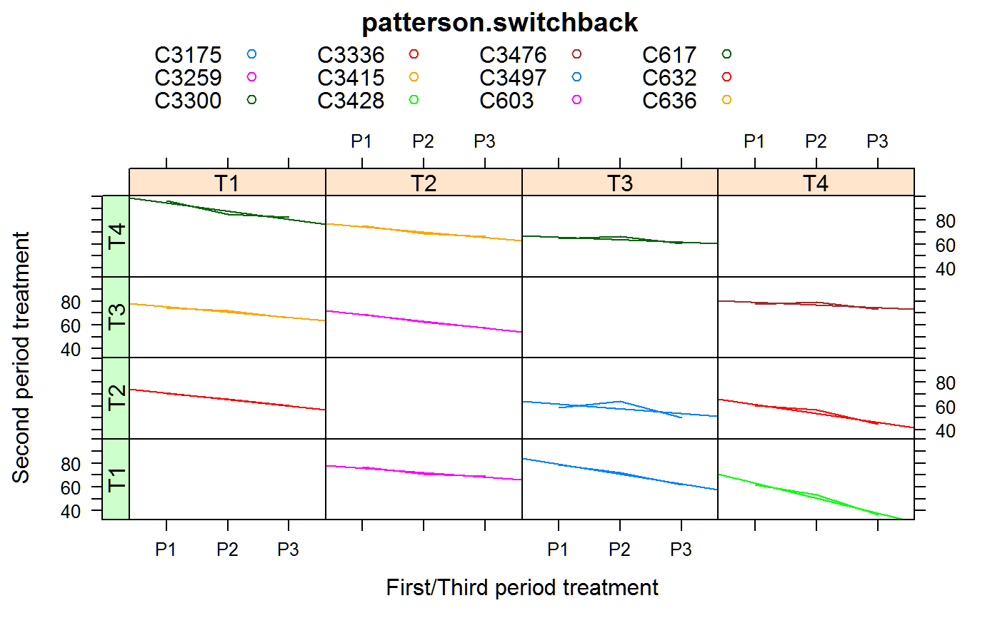

patterson.switchback.RdSwitchback experiment on dairy cattle, milk yield for 4 treatments
data("patterson.switchback")
A data frame with 36 observations on the following 4 variables.
yresponse, milk FCM
trttreatment factor, 4 levels
periodperiod factor, 3 levls
cowcow factor, 12 levels
There are three periods. Each cow is assigned to one treatment cycle like T1-T2-T1, where T1 is the treatment in period P1 and P3, and T2 is the treatment in period P2.
There are four treatments.
All 4*3 = 12 treatment cycles are represented.
Data were extracted from Lowry, page 70.
Patterson, H.D. and Lucas, H.L. 1962. Change-over designs. Technical Bulletin 147, North Carolina Agricultural Experimental Station.
Lowry, S.R. 1989. Statistical design and analysis of dairy nutrition experiments to improve detection of milk response differences. Proceedings of the Conference on Applied Statistics in Agriculture, 1989. https://newprairiepress.org/agstatconference/1989/proceedings/7/
# \dontrun{ library(agridat) data(patterson.switchback) dat <- patterson.switchback # Create groupings for first treatment, second treatment datp1 <- subset(dat, period=="P1") datp2 <- subset(dat, period=="P2") dat$p1trt <- datp1$trt[match(dat$cow, datp1$cow)] dat$p2trt <- datp2$trt[match(dat$cow, datp2$cow)] libs(latticeExtra) useOuterStrips(xyplot(y ~ period|p1trt*p2trt, data=dat, group=cow, type=c('l','r'), auto.key=list(columns=5), main="patterson.switchback", xlab="First/Third period treatment", ylab="Second period treatment"))# Create a numeric period variable dat$per <- as.numeric(substring(dat$period,2)) # Need to use 'terms' to preserve the order of the model terms m1 <- aov(terms(y ~ cow + per:cow + period + trt, keep.order=TRUE), data=dat) anova(m1) # Match table 2 of Lowry#> Analysis of Variance Table #> #> Response: y #> Df Sum Sq Mean Sq F value Pr(>F) #> cow 11 3466.0 315.091 57.1773 2.258e-06 *** #> cow:per 12 953.5 79.455 14.4182 0.0004017 *** #> period 1 19.7 19.740 3.5821 0.0950382 . #> trt 3 58.3 19.418 3.5237 0.0685092 . #> Residuals 8 44.1 5.511 #> --- #> Signif. codes: 0 '***' 0.001 '**' 0.01 '*' 0.05 '.' 0.1 ' ' 1## Analysis of Variance Table ## Df Sum Sq Mean Sq F value Pr(>F) ## cow 11 3466.0 315.091 57.1773 2.258e-06 *** ## cow:per 12 953.5 79.455 14.4182 0.0004017 *** ## period 1 19.7 19.740 3.5821 0.0950382 . ## trt 3 58.3 19.418 3.5237 0.0685092 . ## Residuals 8 44.1 5.511 # }